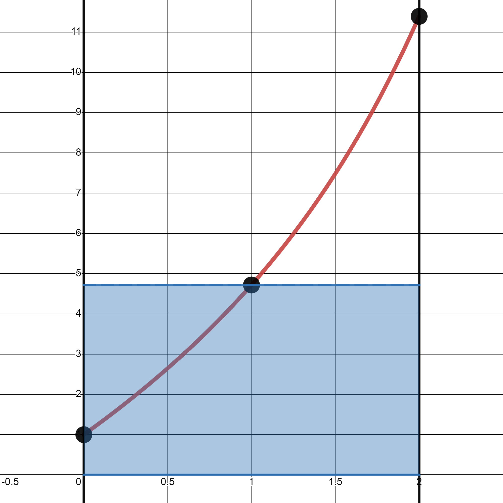
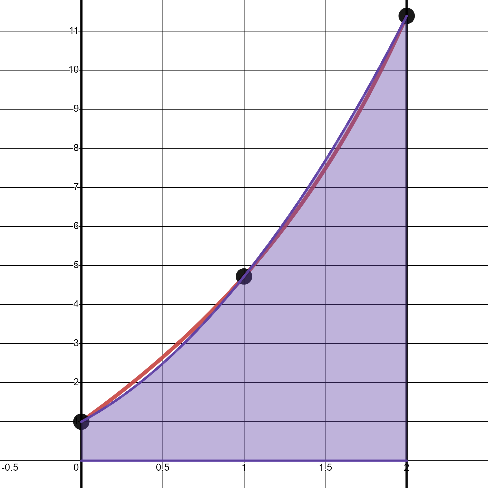
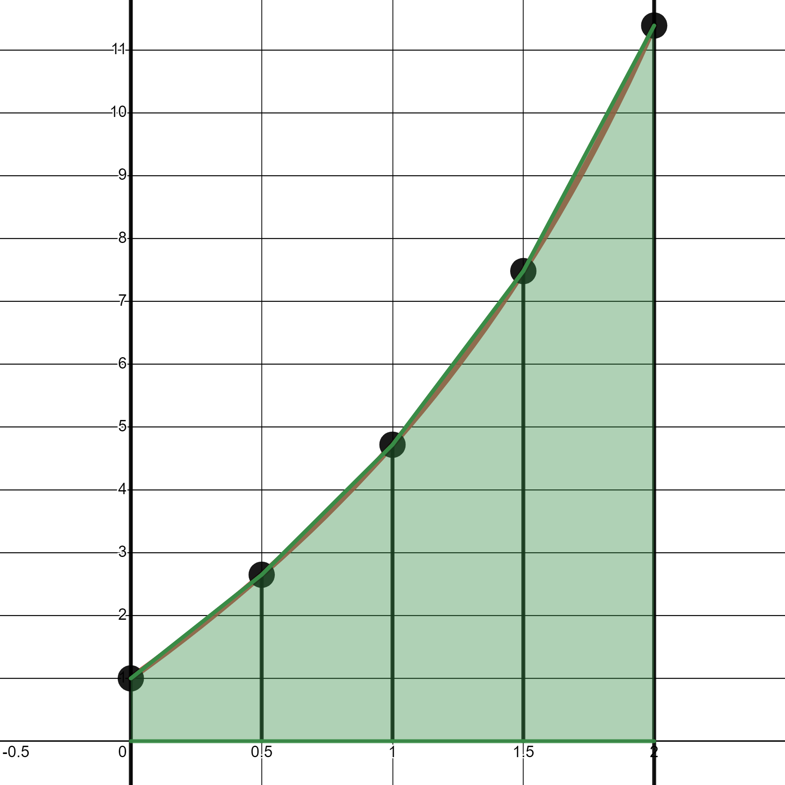
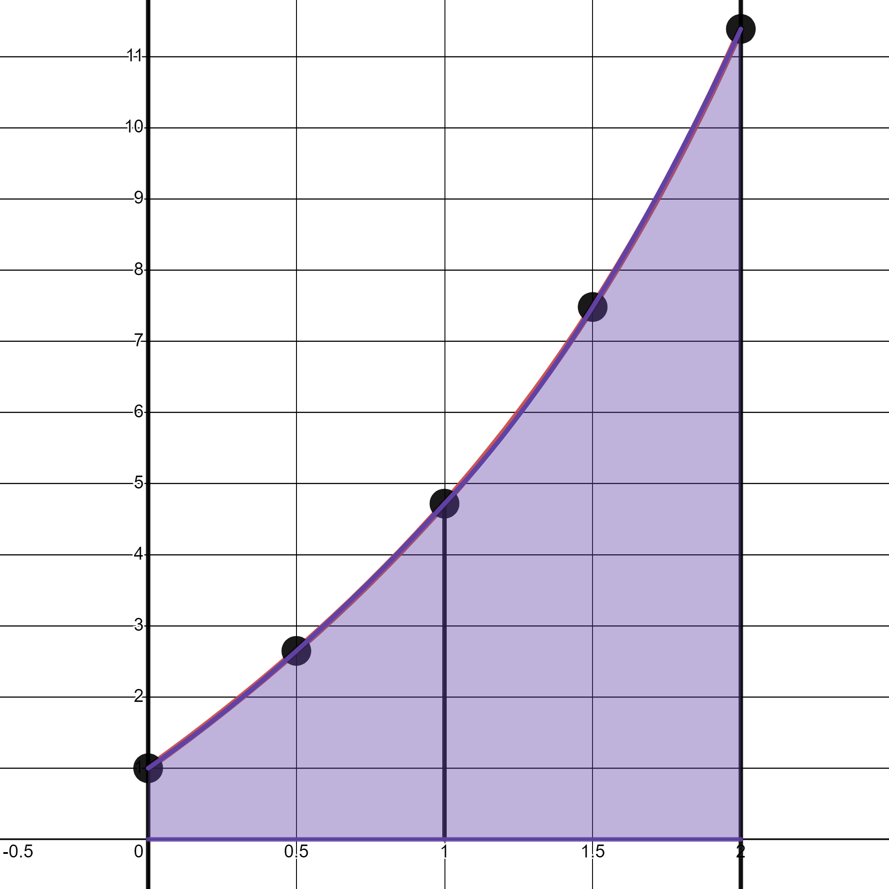

4.4. Numerical integration#
4.4.1. Cases where it is used#
There are some cases in which, instead of looking for an antiderivative of a function and applying Barrow’s rule, we use a numerical integration formula. In particular, when
we only know the values of the function at a finite number of points,
its antiderivative cannot be expressed in terms of elementary functions. For example:
its antiderivative is very expensive to compute or evaluate. For example:
Definition (Numerical integration or quadrature formula)
A numerical integration formula, or quadrature formula, is a sum of the form:
where the points \(x_0\), \(x_1\), …, \(x_n\) are called quadrature nodes and the values \(\omega_0\), \(\omega_1\), …, \(\omega_n\) are the weights associated with each node.
4.4.2. Simple formulas#
Midpoint formula:
\[ \int_a^bf(x)\,dx\,\simeq\,(b-a)\,f\left(\frac{a+b}{2}\right) \,. \]
Trapezoidal formula:
\[ \int_a^bf(x)\,dx\,\simeq\,\frac{b-a}{2}\,\big(f(a) + f(b)\big) \]
Simpson’s formula: It is based on quadratic interpolation (three nodes):
\[ \int_a^bf(x)\,dx \,\simeq\, \frac{b-a}{6}\,\Big(\,f(a)\,+\,4\,\, f(\frac{a+b}{2})\,+\,f(b)\Big) \]
{kind=link}
{kind=link}
Example
Find an approximation to \(\displaystyle \int_1^3 \sin(\sqrt{x}) \, dx\) using the trapezoidal and Simpson formulas, and compare it with the exact solution:
Taking the substitution \(u = x^{1/2}\) and integrating by parts, we obtain:
Whereas numerical integration gives:
Simpson’s formula uses one more node than the trapezoidal rule, and in this example we can see that it provides a better approximation.
4.4.3. Composite formulas#
The idea is simple: divide the interval of integration, \([a,b]\), into subintervals and use a simple numerical integration formula on each of them.
The most common case arises when we take \(n\) subintervals, \([x_i, x_{i + 1}]\), all of equal length \(h\). That is, when we choose \(x_i = a + ih\), \(i = 0, 1, ..., n\), for a value \(h = \frac{b - a}{n}\).
Then we approximate the integral by a simple formula on each subinterval. But be careful!
for the midpoint or Simpson rule we must take intervals of size \(2h\), that is, every 3 points, because we need the midpoint of each subinterval, \([x_{2i-2}, x_{2i}]\),
for the trapezoidal rule, since we do not need the midpoint, we can take all the subintervals, which in this case have length \(h\): \([x_{i}, x_{i-1}]\).
Then we have:
Composite midpoint or Simpson, with even \(n\): \(\displaystyle \int_a^b f(x)\,dx = \sum_{i=1}^{n/2} \int_{x_{2i-2}}^{x_{2i}} f(x)\,dx\).
Composite trapezoidal rule: \(\displaystyle \int_a^b f(x)\,dx = \sum_{i=0}^{n} \int_{x_{i-1}}^{x_{i}} f(x)\,dx\).
Now, depending on the simple formula we choose, we obtain:
Composite midpoint formula:
\[\begin{eqnarray*} \int_a^b f(x)\,dx = \sum_{i=1}^{n/2} \int_{x_{2i-2}}^{x_{2i}} f(x)\, dx &\approx& \sum_{i=1}^{n/2} \left(x_{2i}-x_{2i-2}\right) f\left(x_{2i-1}\right) \\ &=& 2h\sum_{i=1}^{n/2} f\left(x_{2i-1}\right) \end{eqnarray*}\]
Composite trapezoidal formula:
\[\begin{eqnarray*} \int_a^b f(x)\,dx = \sum_{i=1}^{n} \int_{x_{i-1}}^{x_{i}} f(x)\, dx &\approx& \sum_{i=1}^{n} \frac{h}{2} \left( f\left(x_{i-1}\right) + f\left(x_{i}\right) \right) \\ &=& \frac{h}{2} \left( f(x_{0}) + 2 \sum_{i=1}^{n-1}f(x_{i}) + f(x_{n}) \right) \end{eqnarray*}\]
Composite Simpson’s formula:
\[\begin{eqnarray*} \int_a^b f(x)\,dx = \sum_{i=1}^{n/2} \int_{x_{2i-2}}^{x_{2i}} f(x)\, dx &\approx& \sum_{i=1}^{n/2} \frac{2h}{6} \left(f\left(x_{2i-2}\right) + 4f\left(x_{2i-1}\right) + f\left(x_{2i}\right) \right) \\ &=& \frac{2h}{6} \left( f(x_{0}) + 4\sum_{i=1}^{n/2} f(x_{2i-1}) + 2\sum_{i=1}^{n/2-1}f(x_{2i}) + f(x_{n}) \right) \end{eqnarray*}\]
{kind=link}
{kind=link}
4.4.4. Programming in Numpy#
You can see the implementation of these methods in Section Integration in Python.
Please take a careful look at how these composite formulas are implemented in a single line, using the np.sum command, which allows us to avoid loops completely. It is a fantastic exercise for working with arrays in Python…
4.4.5. Further information#
Here are some references in case you would like to broaden your knowledge of numerical integration:
On Wikipedia: https://es.wikipedia.org/wiki/Integración_numérica.
On this page from the Department of Mathematics at the University of Oviedo: https://www.unioviedo.es/compnum/laboratorios_py/Inte/Integrales.html.